Everyday thoughts, visualised with motion.
After getting started with Processing as a part of our Data Visualisation course at NID, I was left fascinated by how interesting it is to visualise not just data, but everyday thoughts, themes, state of mind and whatnot. Thus, I decided to embark on this journey of creative coding - from thematic stories to abstract ones!The whole experience helps me push my creative boundaries by thinking out of the box crazy and a comforting therapy at the end of the day.
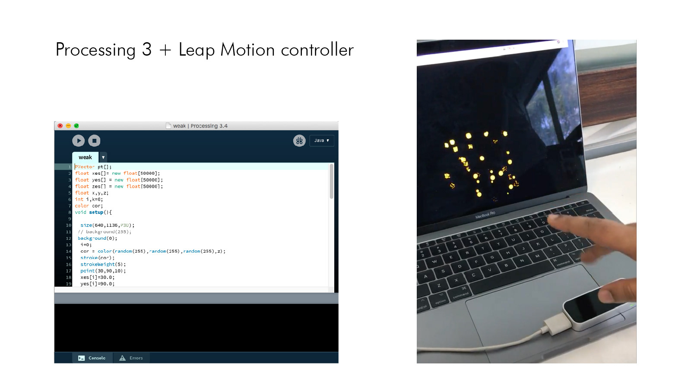
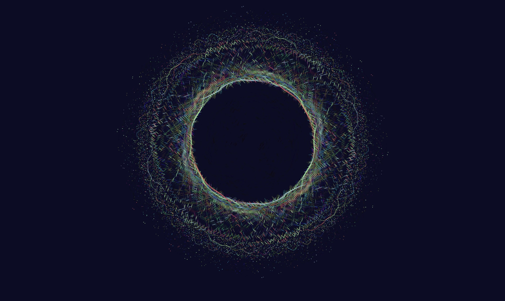
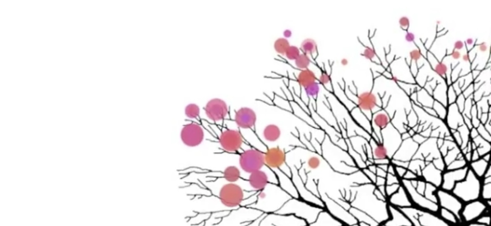
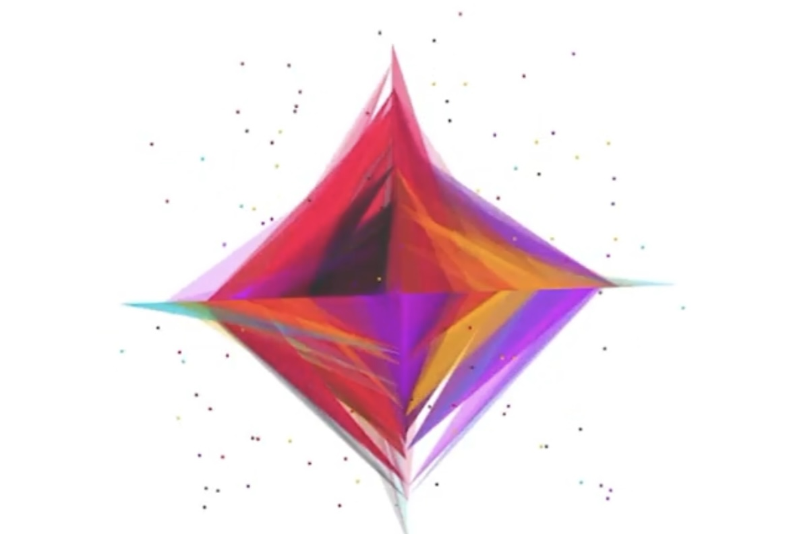
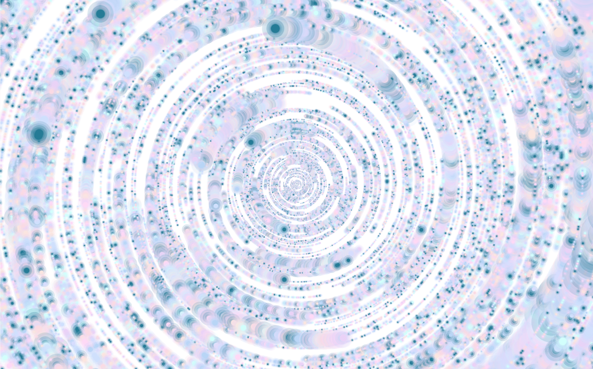
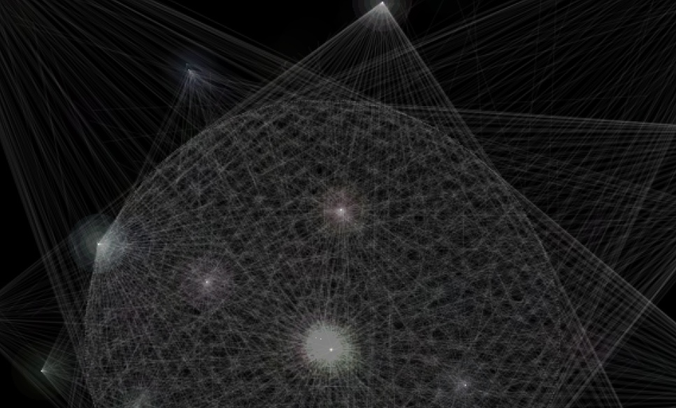
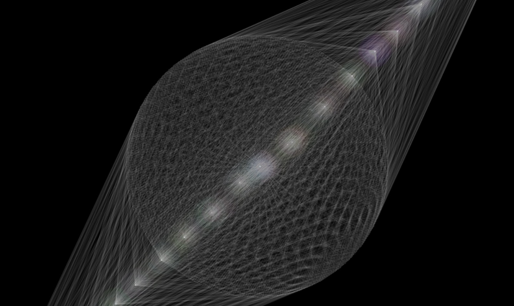
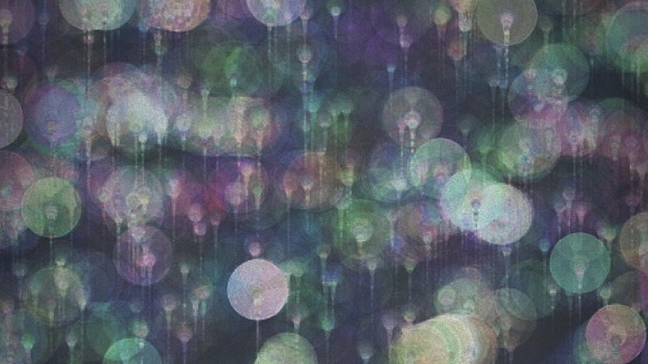
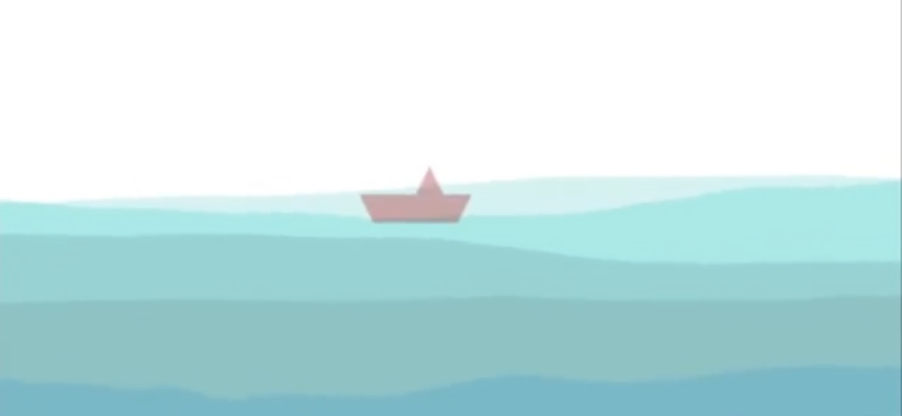
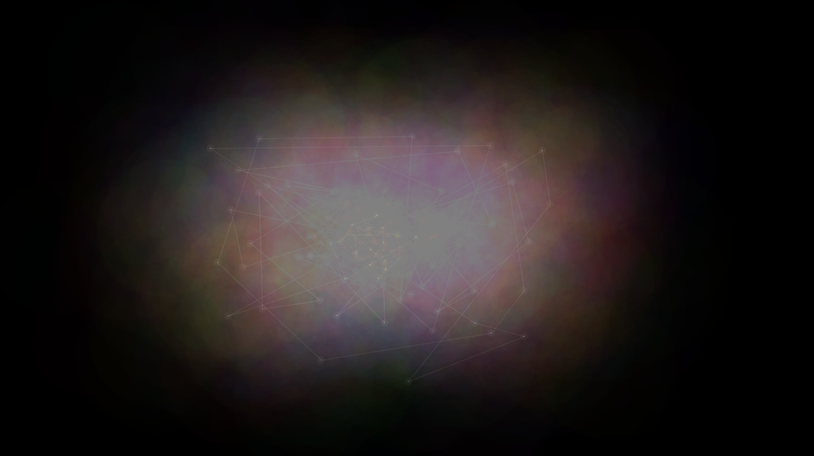
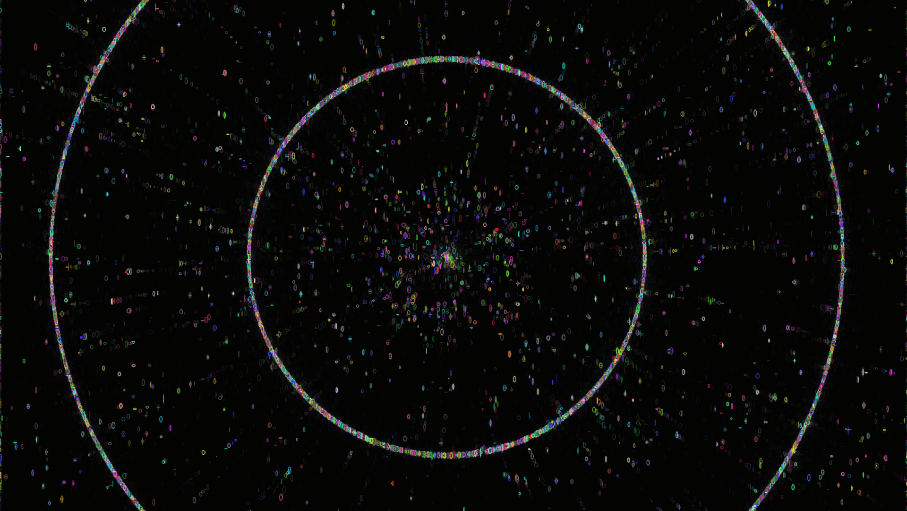
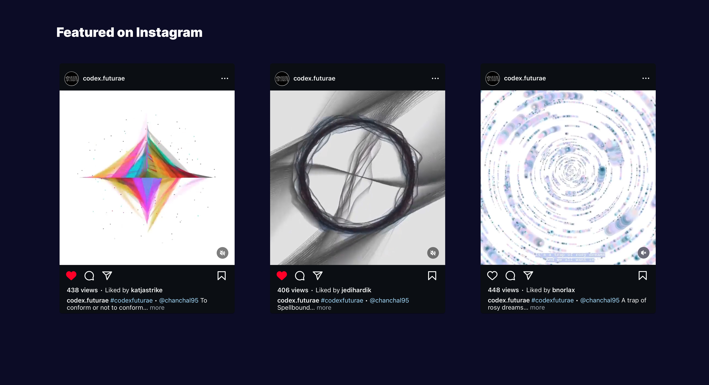